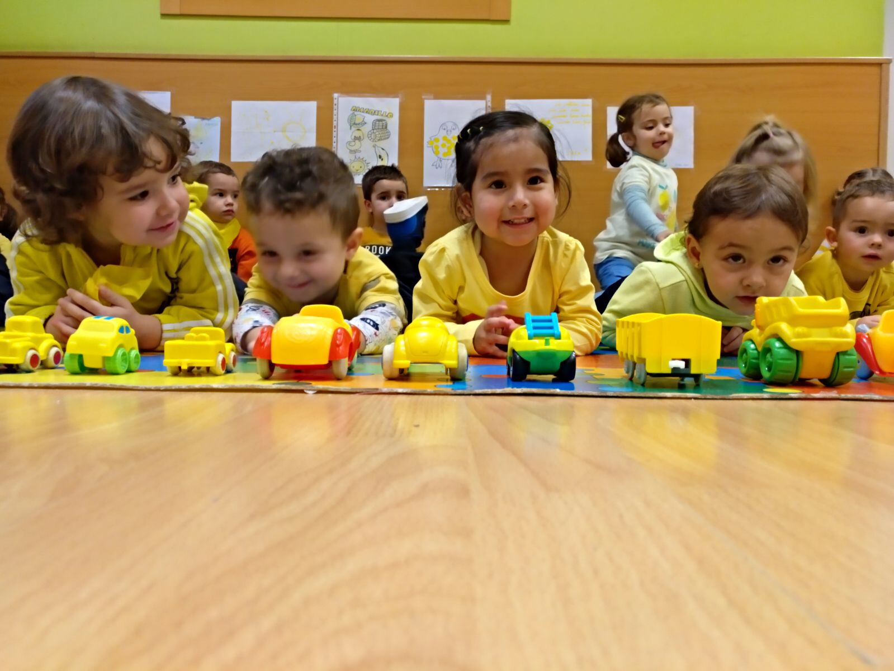

Nivel 1
El futuro de su niño empieza aquí
La formación de los niños del nivel inicial busca que ellos puedan lograr un desarrollo integral y armónico en todas sus dimensiones, que construyan una imagen positiva de sí mismos, fortalezcan su autonomía y adquieran una formación en valores y espiritual basada en los principios de la palabra de Dios.
Para lograrlo trabajamos con la metodología ABP (aprendizaje, basado en proyectos), cada nuevo proyecto parte de la realidad más próxima al niño/a y busca resolver un problema o responder preguntas que los propios niños plantean, durante este proceso de aprendizaje se integra el juego, la exploración, el descubrimiento y la estimulación sensorio motriz.